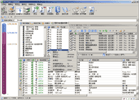
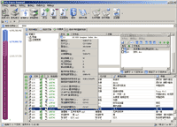
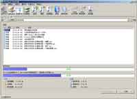
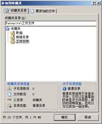
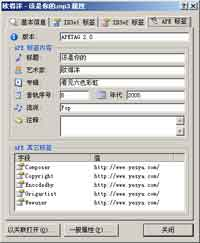
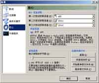

版本 1.3 Release |
1.应用介绍
2.关于 Release 版本
3.屏幕截图
4.基本配置
5.发布许可
6.最终许可协议
7.修订历史
8.感谢及联系方式
| 应用介绍 |
MP3 Player Assistant 是一个十分好用的 MP3 播放器歌曲管理软件，使用它您可以十分简单地复制歌曲（包括歌词），它强大的功能会完美的界面一定会令会让您听歌曲更随心所欲。更激动人心的功能如下：
1.智能管理 MP3 播放器。当第一次您把播放器和电脑连接到时候，选择 MP3 播放器的时候，会自动选择最后一个驱动器。当您不是第一次使用 MP3 Player Assistant 的时候，MP3 Player Assistant 会自动选择 MP3 播放器盘符。如果没有连接 MP3 播放器，MP3 Player Assistant 会自动转到虚拟 MP3 播放器模式，这时这个盘的空间大小会根据以前插入的 MP3 盘符自动填写。
2.独创的虚拟 MP3 盘模式。也许我们有这样一个习惯，我们希望先选择歌曲，然后再将 MP3 播放器连接到电脑上，再复制歌曲，而不是首先就把 MP3 播放器连接到电脑上。MP3 Player Assistant 提供了一个解决方案，在选择 MP3 盘符的时候，可以选择虚拟 MP3 盘，这是会根据以前使用的 MP3 播放器容量设置容量。这样就可以先添加文件，再连接 MP3 播放器。
3.磁盘空间控制。我们都希望在一个 MP3 播放器装上足够多的歌曲，但是磁盘空间，一直都是一个限制因素，因此我们需要将我们约尽可能地添加我们喜欢的歌曲，在主界面左边有一个磁盘空间柱形图，深紫色部分表示 MP3 播放器已使用的空间量，紫色部分表示当前已经添加的数据量，蓝色部分表示剩余空间。这样每添加一个歌曲，我们都可以了解空间的分布状况，并且当我们添加超过会出现一个提示框，防止我们添加过多的数据量。
4.超级拖放。也许我们不喜欢指指点点的，我们喜欢拖放，MP3 Player Assistant 不仅支持程序内的拖放，而且支持 Windows 资源管理器、WinRAR、Foobar2000 等软件的拖放，只要符合 OLE 拖放规则的软件都可以拖放到 MP3 Player Assistant 的列表、收藏夹中，而且MP3 Player Assistant 使用的也是 OLE 拖放标准，可以将里面的文件拖放到很多软件中。
5.强大的列表排序功能。 Windows 资源管理器有一个不好的习惯，它复制的文件都是随机排序，而我们希望听歌曲的时候有一定的顺序，虽然一般的 MP3 播放器辅助软件可以满足这个要求，但是它们需要手动排序，MP3 Player Assistant 不仅可以通过单一的字段（如艺术家）排序，还可以通过组合字段（比如“艺术家 - 专辑 - 音轨序号 - 标题”）来排序，这样就很简单地就能一次按照专辑顺序听歌了，不仅如此，MP3 Player Assistant 还可以随机排序。如果要手动排序，有很方便的快捷键，只要选择了要移动的歌曲，按下 A 表示移动到最前，D 表示移动到最后，W 表示向上移动，S 表示向下移动。
6.方便的试听功能。MP3 Player Assistant 里面内置简单 MP3 WMA 播放器，其内核是 Windows Media Player（这就是为什么需要安装 Windows Media Player 9 的原因之一），将它融入到一个工具栏中，只要您选择了一个音频文件，就可以单击工具栏上的播放按钮，就可以开始播放歌曲了，可以在状态栏中看到播放状态，拖动工具栏中的滑杆可以快速移动到要听得部分。
7.广泛的列表导入支持。MP3 Player Assistant 支持众多播放清单格式。其中包括 M3U（标准、Winamp 增强型播放清单）、PLS（Winamp 播放列表）、FPL（Foobar2000 播放列表）、CUE（电视节目演播次序表）、M3U8（MP3 播放列表(UTF-8 编码)）、WPL（Windows Media Player 播放列表）和 ASX（Windows Media Player 音频快捷方式），并且可以保存 M3U 播放列表。
8.强大的标签支持。由于要获得音乐文件的信息来排序，MP3 Player Assistant 使用了强大的音乐文件信息文件获得方式，支持的标签包括 ID3v1、ID3v2 和 APETAG2.0，而且可以自定义获得标签的优先权，也可以通过 Windows Media Player 来获得标签内容，但是 WMP 不支持 ID3v1.0 和 APETAG2.0。随着 Foobar2000 的流行，APETAG2.0 大有取代 ID3v2 之势，最大的好处在于它使用了 UTF-8 编码，有更好的国际化支持。而且有些播放器在使用 ID3v2 的时候会出现乱码，这是因为 ID3v2 使用的是 Unicode 或者 ANSI 编码，而很多播放器不认得 ID3v2 的 Unicode 编码。
9.强化的属性功能。使用 MP3 Player Assistant 中的属性功能可以一次查看到所有的标签内容（不能修改，抱歉），甚至是 Monkey Audio 文件。
10.自动化功能。可以定制多个目录来让 MP3 Player Assistant 自动搜索歌词文件，而且可以定制在歌曲目录中搜索歌词。自动动态调整排序关键字和过滤器的位置，您每次看到的项目将会是您最后使用的那一个项目。
11.格式化磁盘。MP3 Player Assistant 允许在复制文件之前格式化您的 MP3 播放器。
12.自动获取播放程序中的播放清单。也许您的很多歌曲都在各种播放程序中的媒体库中，也许您喜欢一种特定的播放顺序，现在好了。MP3 Player Assistant 支持从 Windows Media Player、Winamp 和 Foobar200 三大主流播放器中获得播放清单，而且您不必开启这些播放程序，就可以直接获得它们的播放清单。这些清单和程序中的顺序是一样的。
13.强化的收藏夹功能。也许很多程序都有收藏夹功能，本程序也添加了这个功能，不同的是它其中的目录有两种模式“音乐收藏夹”和“普通收藏夹”。“音乐收藏夹”主要是添加歌曲文件，并且同时也把歌曲信息添加到收藏夹中。“普通收藏夹”适合工作的文件，可以添加注释一种信息，但是可以在列表中看到文件的访问、修改时间，适合用于工作文件的复制。
14.完全透明的复制过程。在复制的过程中，有一个详细的列表和两个进度条，并且可以显示复制速度、使用时间的估计剩余时间。
15.环保人士的首选。本程序是以压缩文件打包的，没有任何 ActiveX DLL 和 ActiveX OCX，使用的只是 Visual Basic
中最常用的控件和库。建议您使用 Visual Basic 6.0 SP6
运行库以获得最好的效果。本程序所有设置内容、收藏夹的内容全部保存在程序根目录内，只要您删除这个文件夹就可以彻底删除本程序了。
16.全能的收藏夹和程序清单全文搜索（1.1 Beta 新功能）。在收藏夹和应用程序播放清单页面中，您会看见文件浏览工具栏被搜索工具栏替代了。随便输入一个文字，就会立即发现在左下处弹出搜索结果工具条，这就是根据收藏夹或应用程序播放清单搜索出来的，还有指定标记、保存结果、视听等功能。
17.增强的排序及标签功能（1.2 Beta 新功能）。在新版本中，你会发现在复制列表处加了一个工具条，这就是 1.2 Beta 的新功能，这样可以只对选择的部分进行排序，包括乱序。而且，通过工具条，您可以很方便地重新读取标签。这样有一个好处就是，当你发现某个标签信息错误或不全（特别是 ID3v1）的时候，可以尝试以其他的标签读取。
18.通过各种途径获得歌词（1.3 Release 新功能）。现在可以直接从
Lyrics II 的关联列表、搜索目录和下载目录中获得歌词文件。甚至是不进行任何歌词设置，它都有可能自动搜索到歌词。
| 关于 Release 版本 |
已经通过了几次测试现在发布正式版。
| 版本 | 说明 |
| Preview 版本 | 第一次非正式发布，这个版本可能有些功能未完成，并且只会发布在一些大型论坛上，也没有详细的说明文件。 |
| Beta 版本 | 第一次正式发布，这个版本所有功能已经完成，但是没有经过很多人的测试，也可能会有一些错误。但是有详细的说明文件，也是第一个在正式的软件发布网站中发布的版本，这个版本仍然需要在众多的环境中测试，也可能出现 Beta 1 2 3 等等。 |
| Release 版本 | 通过几次测试，基本上没有一些重大的错误后，就会发布这个版本了，并且加上完整的帮助于支持。 |
| Stable 版本 | 正式发布之后，基本上没有任何问题，也通过了所有的测试，会发布一个稳定（Stable）版本。 |
| Final 版本 | 已经没有需要更新的部分了，而且软件已经走向了终点，不会有任何更新在发布，这就是最后（Final）一个版本。 |
|
|
| 屏幕截图 |
|  |  |  |
| 主界面（应用程序清单） | 主界面（收藏夹） | 复制文件 |
|  |  |  |
| 添加文件到收藏夹 | 文件属性 | 选项（核心）NEW |
| 基本配置 |
必备软件：
| 项目 | 基本配置 | 推荐配置 |
| CPU | PII 333 | PIII 1G |
| 内存 | 32MB | 128MB |
| 声卡 | AC97 | AC97 |
必备环境：
Microsoft Windows 98/ME/2000/XP/2003
Microsoft Windows Media Player 9/10
Microsoft Visual Basic 6.0 SP6 Runtime Library
OLE Automatic Support
| 发布许可 |
MP3 Player Assistant 的这个版本是一个免费版本，与 Preview 版本不同的是它可以被任何人或组织发布。但是在发布之前，您必须接受以下条款，若您发布了，就表示您已经同意了以下条款中的所有条目。
1.保持文件完整。您在发布的的时候必须保持文件（包）的完整性，不能有任何部件或文件遗漏。
2.强调原作者。您在发布的时候，特别是在填写相关信息的时候，必须强调本程序的原作者，而且不能将发布者和原作者混淆。
3.文件正确性。您所发布的副本不能和原作者发布的主程序有差别，也就是说您不能将原程序重新反编译、更改资源后再重新分发包装。
4.非盈利性。若您要将本程序应用于商业用途，例如捆绑在软件光盘、附加在驱动盘中，您必须和原作者联系，并且支付一定的版权费用，才可以进行商业用途的发布。否则，您只能将其作为非盈利性质的发布。
5.禁止捆绑。没有原作者的统一，您不得将本软件捆绑在其它软件中发布，或者将本软件作为其他软件的功能发布。
6.禁止索取费用。本软件是免费软件，您发布给他人的时候禁止向用户索取费用。
如果您发布了本软件，但是您没有遵守以上条款，您将会受到严厉的民事和刑事制裁，并且会受到法律许可的范围内最大可能的起诉。
| 最终用户许可协议 |
作为 MP3 Player Assistant 的用户，您必须无条件地接受下列许可协议。如果您不介绍下列协议中的任何一条，请立即终止使用本程序，并且从您的计算机中删除它。
1.禁止更改程序。作为用户，除非原作者特殊声明，您没有任何权利反编译、重编译逆向工程，也没有权利使用调试程序对本程序调试、修改。
2.禁止非法发布。若您觉得本程序好，请在阅读了发布许可并且接受上述条款之后再发布。
3.不赔偿性。若您使用本软件对您的硬件或软件造成了损害，原作者不承担索赔费用。
本软件受著作权法和国际公约的保护，若您使用了本软件但是没有遵守以上条款，您将会受到严厉的民事和刑事制裁，并且会受到法律许可的范围内最大可能的起诉。
|
|
修订历史 |
2005 年 8 月 26 日MP3 Player Assistant Version 1.3 Release 更新：
| 类型 | 内容 |
| 错误修正 | 修正了在读取 Windows Media Player 播放清单的时候如果文件不存在而发生的错误。 |
| 算法更新 | 重新写了拖放功能，现在在程序内部拖放更快了。 |
| 算法更新 | 新增信息读取内核，现在可以直接从程序播放清单（Winamp 清单除外）和收藏夹中继承信息，试验证明速度可以提高 5-10 倍。 |
| 算法更新 | 继承属性可以在搜索结果窗口中使用。 |
| 算法更新 | 统一化歌词搜索函数。 |
| 功能添加 | 新增插入文件功能，文件将插入在所选文件的前面。 |
| 功能添加 | 搜索结果窗口支持上下午菜单。 |
| 功能添加 | 添加不获得歌曲长度和不获得文件日期的功能，提高速度。 |
| 功能添加 | 现在可以直接从 Lyrics II 的关联列表、搜索目录和下载目录中获得歌词文件。 |
| 功能添加 | 复制过程中可以进行后台操作，这样可以减少 CPU 占用和内存占用。 |
2005 年 8 月 8 日MP3 Player Assistant Version 1.2 Beta 更新：
| 类型 | 内容 |
| 错误修正 | 修正了某些机器上开始会发生”类型不匹配“的错误。 |
| 错误修正 | 修正了在 Windows 9x 下”选择 MP3 播放器“中空间不能大于 2GB 的错误。 |
| 错误修正 | 修正了在 Windows 9x 下开始时发生”该程序执行了非法操作“的错误。 |
| 错误修正 | 修正了 ID3v2 读取某些文件的时候发生崩溃。 |
| 错误修正 | 修正了在某些速度慢地机器上图标不能正确显示的错误。 |
| 错误修正 | 修正在添加相同的文件到收藏夹中发生的错误。 |
| 错误修正 | 修正在拖放到收藏夹列表时有时候发生的错误导致崩溃。 |
| 错误修正 | 修正了在排序过后出现音轨为 -1 或 0 的错误信息。 |
| 错误修正 | 修正了一些小的界面错误。 |
| 算法更新 | 重新编写了排序算法，更快、更安全了。 |
| 算法更新 | 现在可以直接从 FPL 播放清单中读取文件大小了。 |
| 功能添加 | 现在可以只对选择的项目排序了（局部排序）。 |
| 功能添加 | 现在可以在”选择排序关键字“对话框中选择升序或降序。 |
| 功能添加 | 在列表中添加了一栏，标签类型。如果发现信息不正确，可以换一个标签试试。 |
| 功能添加 | 现在可以对列表中的项目重新读取标签信息了，也可以选择不同的标签读取。 |
| 功能添加 | 在列表旁边有一排快捷工具栏，可以对选择的项目移动位置、排序和重新读取标签。 |
| 功能添加 | 添加了众多的上下文菜单，方便了喜欢鼠标又键的朋友。 |
2005 年 7 月 30 日MP3 Player Assistant Version 1.1 Beta 更新：
| 类型 | 内容 |
| 错误修正 | 修正在文件浏览器中添加全部文件出现“类型不匹配”的错误。 |
| 错误修正 | 修正在复制大文件的时候发出溢出错误。 |
| 错误修正 | 修正了切换应用程序播放清单的错误。 |
| 错误修正 | 修正了切换界面时未更新状态栏。 |
| 算法更新 | 更新了在收藏夹华应用程序清单中选择文件统计文件大小慢的情况。 |
| 功能添加 | 添加了搜索工具条。 |
| 功能添加 | 添加了搜索结果窗口。 |
2005 年 6 月 25 日MP3 Player Assistant Version 1.0 Beta 更新：
| 类型 | 内容 |
| 错误修正 | 修正在某些环境下选择“选项”会退出。 |
| 错误修正 | 修正在 WinXP 下不能保存最大化状态。 |
| 错误修正 | 修正在 WinXP 下选择虚拟磁盘出错。 |
| 错误修正 | 修正在某些 APE 嵌套标签无法读取的情况。 |
| 错误修正 | 修正了在某些机器上界面混乱的问题。 |
| 错误修正 | 修正了添加重复文件错误的问题。 |
| 错误修正 | 修正了在读取 ID3v2 没有音轨序号而产生的错误。 |
| 算法更新 | 更新了排序算法，更加准确。 |
| 算法更新 | 更新了文件大小、时间的排序，速度提高。 |
| 算法更新 | 重新设置配置文件的读取，使用自定义读取方式，提高的效率。 |
| 功能添加 | 添加了新的收藏夹功能。 |
| 功能添加 | 添加了获得文件属性的功能。 |
| 感谢及联系方式 |
如果您发现了新的错误或新的功能，请发电子邮件我，对于好的建议和意见，我会将他们列 在程序中。
网站：腾龙阁
官网：MP3 Player Assistant 官方网站
下载：腾龙阁软件发布网络硬盘
主邮箱：chenminglong21cn@21cn.com
副邮箱：alexanderchenwh@sina.com
QQ：284069289